Methods
There are two main methods of holding the needles and yarn while you knit. Try both and use which ever you find easiest to create even stitches. Wrangling the needles and yarn takes practice, and everyone knits differently. The tension of the yarn is usually controlled by the way you wrap the yarn through your fingers, so find a configuration that works for you. However, the yarn closest to the needle is controlled by the index finger.
English
The working yarn is held in your right hand along with the working needle. Hold the needles between your thumb and index finger. This method is also called the “throw method” because the motion you make when you work a stitch is like throwing the yarn around the needle. When you work stitches you have generally to let go of the right needle unless you keep the yarn very close to the tip of your finger.
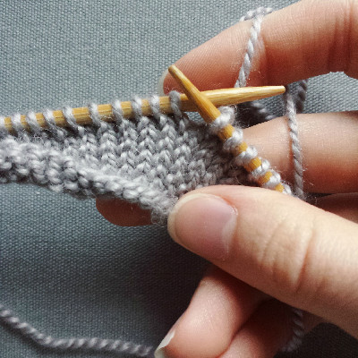Continental
The working yarn is held in your left hand. The left needle is held between your thumb and middle finger, leaving the left pointer index finger to freely control the working yarn. With this method, you do less of a wrapping motion and more of a picking/catching motion to get the yarn through the loop.
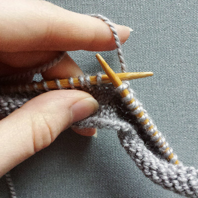 Back to the topCasting On
Casting on is the way you get your first stitches onto your needle. There are multiple ways to cast on, each with their own pros and cons. All of them boil down to making loops from right to left on one of your needles. Here two of the easier and more versatile methods are explained. I personally prefer the long-tail cast on because it makes a stable edge with a good amount of stretch, it is fast, and it gives you a row of knitting to work from.
Knit-on
This method uses two needles to essentially work a knit stitch onto the left needle.
- 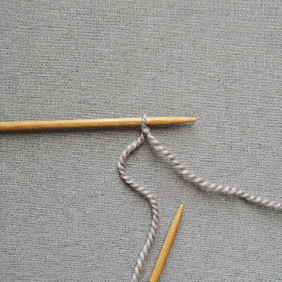
- 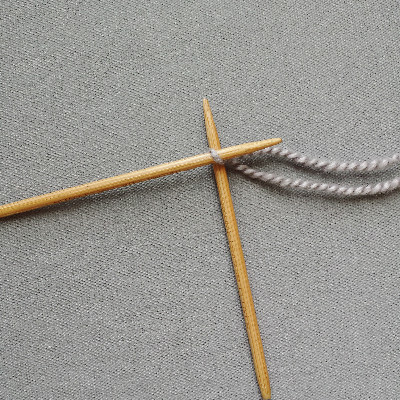
- 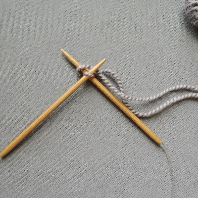
- 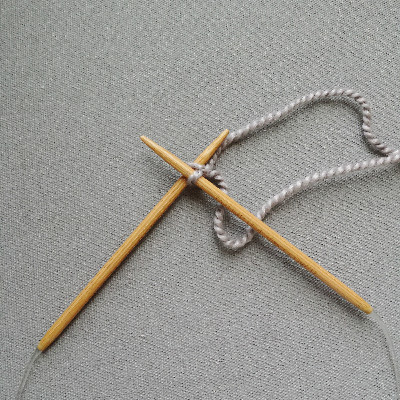
- 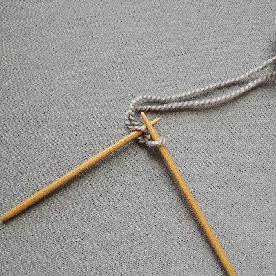
- 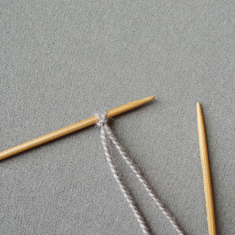
- Make a slip knot on the left needle.
- Poke the right needle through the loop from left to right and wrap the yarn connected to ball up and over the right needle.
- Use the right needle to pull the yarn through the loop, leaving the first loop on the left needle.
- Place the new loop (on the right needle) on the left needle.
There are now two loops on the left needle.
Repeat steps 2-4 on the loop closest to the needle tip until you have the required number of stitches. Be careful not to make the cast on stitches too tight, or they will be difficult to work and will not allow the edge to stretch.
Long-tail (Continental)
This cast on is a bit fiddly to start with, but becomes very fast once you get the hang of it.
This method uses one needle and gives you a row of knitting to work from. With this method, you need make a slip knot just as you would for the knitting on method, but the tail of the slip knot needles to be about 3 for 4 times as long as the intended length of the edge. The tail is what you are using to knit that row of stitches. One of my favorite knitting resources, Purl Soho, happens to have a helpful video on the subject.
via: Purl Soho. www.purlsoho.com/create/long-tail-cast-on/
- Make your slip knot on one of the needles and hold the needle in your right hand.
- With your left hand, drape the working yarn over your pointer finger, and the tail over your thumb. Use your remaining fingers to hold both dangling strands against your palms. The whole arrangement should look kind of like a little sling shot.
- Take the needle and pull it down towards your wrist. When you do this the yarn should cross around your thumb.
- Take the point of the needle and poke it through the loop around your thumb from behind, and then use the needle to pull the working yarn through the loop. Let the loop slip off your thumb but still hold the strands against your palm.
- Arrange the tail back over your thumb and use your thumb to tighten the stitch you just made.
Repeat steps 3-5 until you have the required number of stitches. Be careful not to make the cast on stitches too tight, or they will be difficult to work and will not allow the edge to stretch. Patterns do not count the row of stitches this creates as a proper row.
Long-tail Tubular Cast On
This is one of my favorite cast on methods, especially for hats. It produces a very clean, very stretchy ribbed edge. It can be tricky to get the hang of, and benefits from visual instructions. If you are going to use it for anything other than 1x1 ribbing you will need to do some simple rearranging of the stiches before you start knitting proper. It is also worth noting that it uses a good amount of yarn. It can be tricky to get the hang of and benefits from visual instructions. One of my favorite knitting resources, Purl Soho, happens to have a helpful video on the subject.
via: Purl Soho. www.purlsoho.com/create/long-tail-tubular-cast-on-tutorial
Knitting
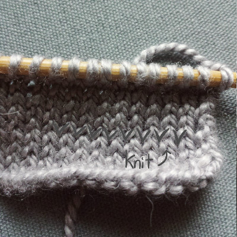The best way to remember the process of making a knit stitch is “in, over, under, off.” Stitches are worked and transferred from the left to right needle. Knit stitches look like a V. The working yarn is held at the back of the work.
- 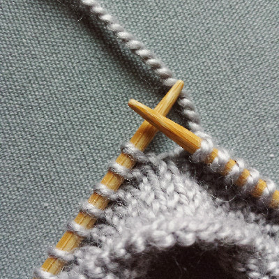
- 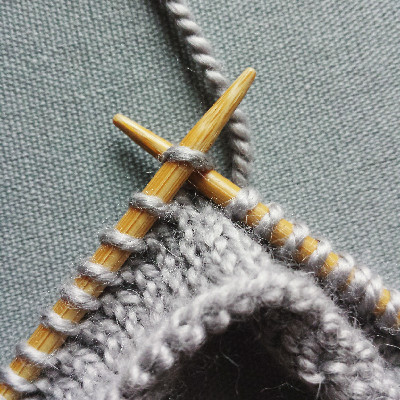
- 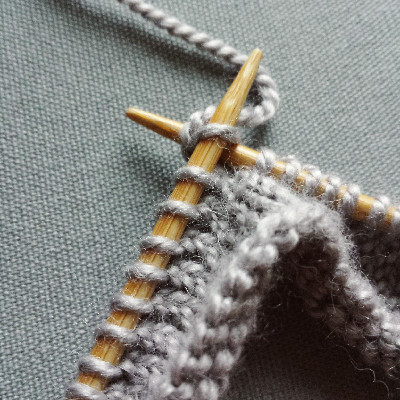
- 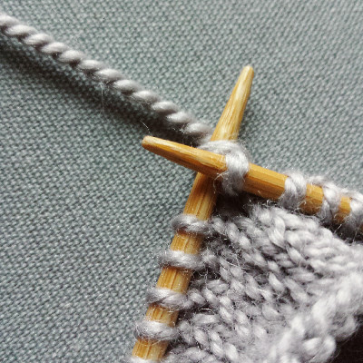
- 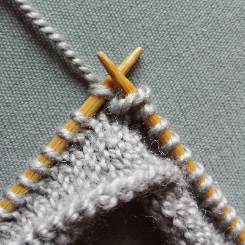
- While holding the needle with the unworked stitches on it in your left hand, poke the tip of the right needle through the first stitch on the left needle.
- Wrap the working yarn up and over the right-hand needle.
- Use the right-hand needle to pull the loop of working yarn through the stitch on the left needle.
- Carefully slip the original stitch off of the left-hand needle from left to right.
Purling
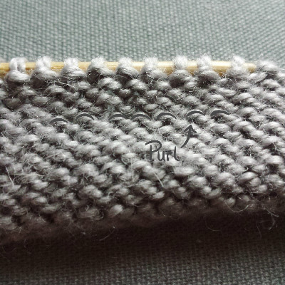Purling uses the same basic process of “in, over, under, off.” Stitches are worked and transferred from the left to right needle. Purl stitches look like a little bump. The main difference from knitting a stitch is that the working yarn is held at the front of the work.
- 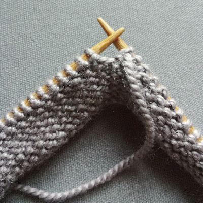
- 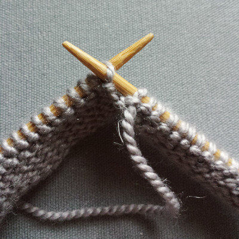
- 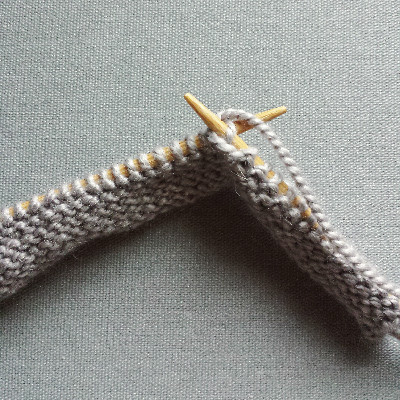
- 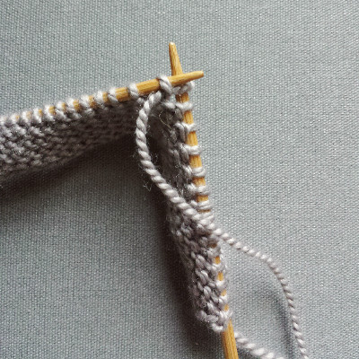
- While holding the needle with the unworked stitches on it in your left hand, poke the tip of the right needle through the first stitch on the left needle from right to left.
- Wrap the working yarn up and over the right-hand needle.
- Use the right-hand needle to pull the loop of working yarn back out through the stitch on the left needle.
- Carefully slip the original stitch off of the left-hand needle.